1. Lecture Objectives
The objective of this lecture is to introduce the principles of data and label efficient learning through active learning and to understand how machine learning models can strategically select informative samples under limited annotation budgets . Students will learn the differences between supervised learning and active learning workflows, understand the role of acquisition functions, and study uncertainty-based methods such as entropy, least confidence, and margin sampling, as well as diversity-based approaches such as core-set selection and discriminative active learning . Additionally, this lecture aims to develop an understanding of how fusion strategies balance diversity and difficulty, how active learning performance is evaluated using both model metrics and annotation cost metrics, and how deployment considerations such as performance regression, negative flips, and Negative Flip Rate (NFR) affect the reliability of iterative model updates.
2. Introduction and Motivation
2.1 Supervised Learning vs. Active Learning
In standard supervised learning, we typically assume that a fully labeled training set is already available before model training begins. The learner is then asked to use these labeled examples to infer patterns that generalize well to unseen data. Under this paradigm, the labeling process is treated as a separate preprocessing step, and the main objective is to optimize predictive performance given the fixed labeled dataset.
Active learning changes this assumption. Instead of requiring all labels in advance, active learning assumes access to a large pool of unlabeled data together with a limited annotation budget. The learner is allowed to interactively choose which samples should be labeled next. The goal is not merely to train a model, but to train a model efficiently, achieving strong generalization while requesting as few annotations as possible . In other words, the learner tries to spend the annotation budget only on those samples that are expected to be most informative for improving the model.
2.2 Motivation for Active Learning
The motivation for active learning comes from a simple practical observation: in many real-world applications, unlabeled data is abundant, but labels are expensive. Modern systems can easily collect millions of raw images, video frames, audio clips, medical scans, or sensor measurements. However, turning those raw samples into labeled training data often requires costly human expertise, significant time, or specialized domain knowledge.
For example, in medical imaging, labels may need to be provided by radiologists. In autonomous driving, annotating a scene may require drawing precise bounding boxes, segmentation masks, or depth information for many objects. In cybersecurity, labeling suspicious events may require expert investigation. In all of these cases, labeling every available sample is unrealistic. Therefore, instead of asking “How can we label everything?”, active learning asks a better question: Which small subset of samples should we label so that the resulting model improves as much as possible?
This makes active learning especially attractive in settings where data collection is cheap but annotation is the true bottleneck. The central promise of active learning is that by carefully selecting only the most useful samples, we can approach the performance of a fully supervised system while using far fewer labeled examples .
2.3 Labeling Constraints and Budget: A Case Study
A useful way to understand active learning is through the idea of annotation budget. Suppose that labeling a single sample costs money, time, or both. Then the learner cannot simply request all labels; it must make strategic choices.
Consider a simple example in which each labeled sample costs $3 and the total annotation budget is $9. In that case, only three samples can be labeled. If those three samples are chosen randomly, the model may gain little useful information. On the other hand, if those three samples are selected strategically—for example, because they are highly uncertain, representative of under-covered regions, or near class boundaries—then the same limited budget may lead to a much larger improvement in performance.
This example illustrates the core idea of active learning: under strict resource constraints, sample selection matters. The annotation process becomes an optimization problem in its own right, where the learner must determine how to allocate limited labeling resources for maximum downstream benefit.
3. Theoretical Foundations of Active Learning
While active learning is motivated by practical constraints on labeling, it is also supported by strong theoretical results showing that carefully selected samples can significantly reduce the number of labels required to achieve a desired level of accuracy and understand theoretical guarantees on label efficiency and sample selection in active learning .
3.1 Label Complexity vs. Sample Complexity
In traditional supervised learning, the number of labeled samples required to achieve error \(\epsilon\) is described by the sample complexity, which often scales as \(O(1/\epsilon)\). In contrast, active learning focuses on label complexity, which measures how many labeled samples are needed when the learner can choose which samples to label.
A key theoretical insight is that, under favorable conditions, active learning can achieve the same error rate using exponentially fewer labeled samples. In particular, some active learning algorithms achieve label complexity on the order of \(O(\log(1/\epsilon))\), representing a significant improvement over passive learning .
3.2 Disagreement-Based Learning
A central theoretical framework for active learning is disagreement-based learning. In this setting, the learner maintains a set of plausible hypotheses (often called the version space) and selects samples for which these hypotheses disagree.
The intuition is that if all models agree on a label, then querying it provides little new information. In contrast, disagreement indicates uncertainty about the correct hypothesis, making such samples highly informative.
This idea motivates algorithms such as Query by Committee, where multiple models are used to identify disagreement regions . Under certain assumptions, these methods can achieve exponential reductions in error with respect to the number of queried labels.
3.3 Information Gain and Limitations
Another theoretical perspective connects active learning to experimental design, where the goal is to select samples that maximize expected information gain.
However, maximizing information gain alone does not always guarantee improved predictive performance. Classical results show that if the sampling strategy ignores the underlying data distribution, it may fail to reduce prediction error effectively .
This highlights the need for acquisition functions that balance uncertainty, diversity, and distributional coverage.
3.4 Summary
Theoretical results provide key insights into active learning:
Label complexity can be significantly smaller than in passive learning.
Disagreement identifies informative samples.
Effective query strategies must consider both uncertainty and data distribution.
4. Fundamentals
4.1 Basics
Active learning is motivated by the observation that in many real-world machine learning problems, unlabeled data is abundant while labeled data is scarce and expensive to obtain. Modern data collection systems can easily generate massive amounts of raw data, such as images, videos, medical signals, and sensor measurements. However, transforming this raw data into labeled training examples often requires significant human effort, domain expertise, and financial resources. Therefore, the main challenge is not data availability, but rather how to efficiently utilize limited labeling resources.
In most practical scenarios, the majority of available data remains unlabeled. For example, autonomous driving systems may collect thousands of hours of driving footage, yet labeling every object in every frame requires extensive manual effort. Similarly, medical datasets may contain large numbers of scans, but only a limited portion can be annotated due to the time required from trained specialists. Active learning addresses this imbalance by intelligently selecting which samples should be labeled instead of attempting to label the entire dataset.
Rather than selecting samples randomly, active learning relies on model-guided selection. Information extracted from the current machine learning model is used to determine which unlabeled samples are expected to provide the greatest learning benefit. This information may include prediction uncertainty, confidence scores, disagreement among models, or diversity in the feature space. The key idea is that the model itself can guide the annotation process by identifying which additional labels would most improve its performance.
The overall objective of active learning is therefore to maximize model performance while minimizing annotation cost. Instead of labeling all available data, the goal is to identify a small subset of highly informative samples that allow the model to achieve strong generalization. In this sense, active learning can be viewed as a resource-efficient extension of supervised learning, particularly useful when labeling budgets are limited.
4.2 Active Learning Process
The active learning process is typically formulated as an iterative interaction between a machine learning model and an annotation source, often referred to as the oracle. At each iteration, the model evaluates the unlabeled data pool and selects the most informative samples according to a query strategy known as the acquisition function. This creates a closed learning loop in which the model continuously improves by selectively requesting new labels.
The active learning pipeline generally requires three main components: a large pool of unlabeled data from which informative samples will be selected, a machine learning model that can be trained and updated iteratively, and an acquisition function (also called a query strategy) that determines which samples should be labeled next based on their expected contribution to model improvement .
The active learning process typically follows the iterative procedure described below:
Initialization: The process begins by selecting a small subset of samples from the unlabeled pool, often randomly, to form an initial labeled dataset. These samples are sent to an Oracle (typically a human annotator) to obtain ground-truth labels. The model is then trained on this small labeled set to establish an initial baseline performance. This initial model provides the information needed to guide future sample selection.
Selection: After the initial training step, the model evaluates the remaining unlabeled data. The acquisition function assigns a score to each unlabeled sample based on criteria such as uncertainty, diversity, or expected model improvement. The samples with the highest scores are considered the most informative and are selected for labeling.
Annotation: The selected samples are sent to the Oracle, which may be a human annotator, an automated labeling system, or a domain expert. The Oracle provides the true labels for these selected samples, expanding the labeled training dataset.
Retraining: The newly labeled samples are added to the existing labeled dataset. The machine learning model is then retrained using this expanded dataset. This retraining step improves the model’s accuracy and generalization by incorporating the newly acquired information.
Repeat: The process continues iteratively. At each round, the model selects new samples, obtains labels, and retrains. This loop continues until a stopping condition is reached. Common stopping criteria include exhaustion of the annotation budget, reaching a desired performance level, or observing diminishing performance improvements.
This iterative formulation follows the classical pool-based active learning framework , and is illustrated in Figure 1. The model repeatedly interacts with the unlabeled data pool, selects informative samples through the acquisition function, obtains labels from the oracle, and updates itself through retraining. This closed-loop process enables the model to continuously improve while using a minimal number of labeled samples.
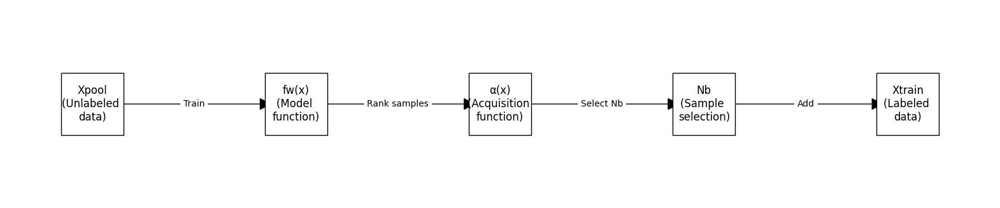
Formally, several key elements define the active learning framework. The unlabeled data pool is denoted by \(\mathbf{X}_{\text{pool}}\), which contains all candidate samples available for selection, while the labeled training dataset is denoted by \(\mathbf{X}_{\text{train}}\), which grows as additional samples are annotated. The machine learning model is represented by the function \(f_w(x)\), where \(w\) denotes the model parameters that are iteratively updated during training.
The acquisition function is denoted by \(\alpha(x)\) and is responsible for evaluating and ranking unlabeled samples according to their expected usefulness for improving the model. Finally, the parameter \(N_b\) represents the batch size, which determines how many samples are selected for annotation during each active learning iteration. Smaller batch sizes allow more adaptive model updates, while larger batch sizes may improve efficiency by reducing retraining frequency.
Together, these components define the core structure of active learning systems, enabling models to learn efficiently from limited labeled data while strategically allocating annotation resources.
5. Performance Metrics and Annotator Constraints
5.1 Performance Metrics
To evaluate the effectiveness of active learning strategies, it is important to measure how efficiently a model improves as additional labeled samples are acquired. Unlike traditional supervised learning, where performance is typically measured only at the end of training, active learning requires continuous evaluation throughout the labeling process. The key question is not only how accurate the final model becomes, but also how quickly performance improves as more annotations are collected.
For classification tasks, several standard performance metrics are commonly used. Accuracy measures the proportion of correctly classified samples and provides a simple global indicator of model performance. However, accuracy alone may be misleading in imbalanced datasets where some classes appear much more frequently than others. In such cases, the F1-score is often preferred because it balances precision and recall through their harmonic mean . Additional insight can be obtained from the True Positive Rate (TPR) and False Positive Rate (FPR), which measure sensitivity and specificity respectively and provide a more detailed understanding of classification behavior.
For more complex tasks such as object detection, specialized evaluation metrics are required. One of the most widely used metrics is mean Average Precision (mAP), which evaluates the precision–recall tradeoff across multiple classes and intersection-over-union (IoU) thresholds. This metric provides a more comprehensive view of detection quality compared to simple accuracy measure .
A common way to visualize active learning performance is through a performance curve, where model performance is plotted as a function of the number of labeled training samples \(X_{\text{train}}\). This type of curve allows us to compare how quickly different acquisition strategies improve model performance. As illustrated in Figure 2, strategies with higher area under the curve (AUC) are generally preferred because they achieve strong performance with fewer labeled samples, indicating more efficient use of annotation resources.
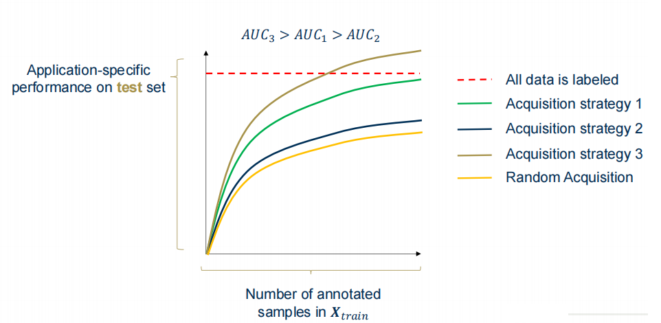
5.2 Annotator Metrics
While model performance is important, active learning must also consider the practical constraints associated with data annotation. In real-world applications, annotation is often the most expensive and time-consuming part of the machine learning pipeline. Therefore, evaluating annotation efficiency is just as important as evaluating model accuracy.
Annotator metrics capture the resources required to generate labeled data. One important metric is annotation time, which measures the total number of hours required to label the selected samples. Another important factor is monetary cost, which includes the expense of hiring annotators or using annotation platforms. In addition, computational complexity may also be relevant, particularly in cases where annotation requires preprocessing, simulation, or large-scale computation such as GPU processing.
A practical example of these constraints is illustrated in Figure 3. Consider a dataset containing 578 frames requiring annotation, such as object detection or LiDAR labeling. If each frame requires approximately 49 minutes to annotate, the total annotation time would be roughly 1 day and 10 hours of continuous work. When multiplied by annotator hourly rates, this also translates into significant financial cost. This example highlights why careful sample selection is essential in active learning: selecting the wrong samples wastes both time and money.
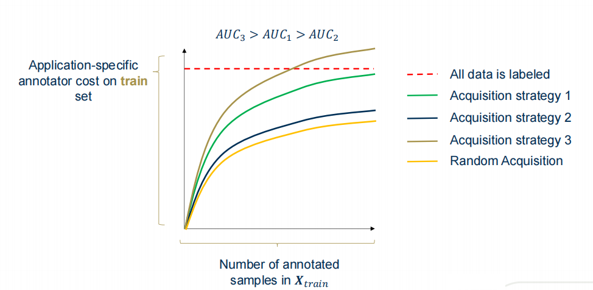
5.3 Optimizing Metrics
An effective active learning system must balance two competing objectives: improving model performance and minimizing annotation effort. Focusing only on accuracy may lead to excessive labeling costs, while focusing only on cost may result in poor model performance. Therefore, both performance metrics (Figure 2) and annotator metrics (Figure 3) must be considered together.
In practice, the goal is to identify acquisition strategies that provide the greatest performance improvement per unit annotation cost. For example, a strategy that achieves a slightly lower final accuracy but requires significantly fewer labeled samples may be preferable in resource-constrained environments. Similarly, strategies that achieve high AUC values while also minimizing annotation time and cost are generally considered more efficient.
5.4 Strategy
Different acquisition strategies attempt to improve this efficiency by selecting samples according to different notions of informativeness. As shown in Figure 2, some strategies allow models to learn faster with fewer labeled samples than others.
Three commonly used uncertainty-based strategies include:
Entropy Sampling: This strategy selects samples with the highest prediction uncertainty, measured through entropy. Samples with high entropy typically correspond to cases where the model is unsure which class to assign.
Least Confidence: This method selects samples for which the model has the lowest prediction confidence. These samples typically lie near decision boundaries and may provide useful information for refining the classifier.
Margin Sampling: This approach selects samples where the difference between the top two predicted class probabilities is smallest. These cases represent situations where the model is nearly undecided between two competing classes.
Each of these strategies attempts to identify informative samples, but they differ in how they measure uncertainty. In practice, the best strategy often depends on the dataset, the model architecture, and the stage of the active learning process.
6. Difficulty-based Active Learning
Difficulty-based active learning focuses on selecting samples that are most challenging for the model to predict. These methods are commonly referred to as uncertainty-based acquisition strategies because they attempt to identify samples where the model is uncertain about its predictions. The central intuition is that labeling easy samples provides little new information, while labeling difficult samples can significantly improve the model’s decision boundaries.
6.1 Overview
The main idea behind difficulty-based acquisition functions is to identify samples that the model finds difficult to classify and prioritize those samples for annotation. These difficult samples often include rare classes, statistical outliers, noisy observations, and samples arising from class imbalance. Such data points typically lie near decision boundaries or in underrepresented regions of the feature space.
By focusing on these challenging examples, the model can improve its robustness and generalization ability. Instead of reinforcing what the model already understands, difficulty-based sampling forces the model to learn from cases where it is most uncertain. As a result, the model becomes better at handling edge cases and complex decision boundaries.
6.2 Acquisition Functions for Difficult Samples
Several uncertainty-based strategies have been proposed to identify difficult samples. Among the most commonly used approaches are entropy sampling, least confidence sampling, and margin sampling . Although these methods differ in how they measure uncertainty, they all share the same objective: selecting samples that are expected to provide the greatest improvement to the model if labeled.
6.2.1 Entropy-based Sampling
Entropy-based sampling selects samples with the highest prediction uncertainty, measured using entropy. Entropy quantifies the amount of information or uncertainty in a probability distribution. If the model assigns similar probabilities to multiple classes, the entropy is high, indicating uncertainty. If one class dominates, the entropy is low, indicating confidence.
The entropy-based acquisition function is defined as:
\[a(x_1, ..., x_{N_b} | f_W(x)) = \sum_{i=1}^{N_b} H(p(y|x_i, W))\]
where the entropy is defined as:
\[H(p(y|x_i, W)) = -\sum_{c=1}^C p(y=c|x_i, W)\log(p(y=c|x_i, W))\]
This formulation prioritizes samples whose predicted class distributions have the highest entropy. Intuitively, these correspond to samples where the model is most confused and therefore most likely to benefit from additional supervision .
Figure 4 illustrates this concept. Samples with spread-out probability distributions across multiple classes exhibit higher entropy and are therefore selected for labeling.
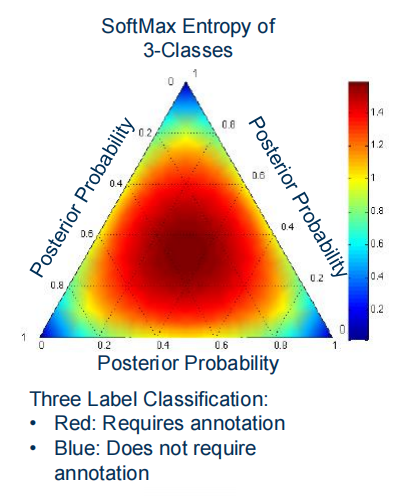
6.2.2 Least Confidence Sampling
Least confidence sampling is a simpler uncertainty measure that focuses only on the model’s highest predicted probability. Instead of considering the entire probability distribution, this method examines how confident the model is in its top prediction. Samples with lower maximum predicted probability indicate lower confidence and are therefore considered more informative.
The least confidence acquisition function is defined as:
\[a(x_1, ..., x_{N_b} | f_W(x)) = -\sum_{i=1}^{N_b} \max_y p(y|x_i, W)\]
This strategy identifies samples where the model is least confident in its prediction. For example, if the model predicts a class with probability 0.55, this indicates greater uncertainty than a prediction with probability 0.95. By selecting low-confidence samples, the model focuses annotation effort on areas where it is most uncertain .
Figure 5 provides a visual illustration of this concept.
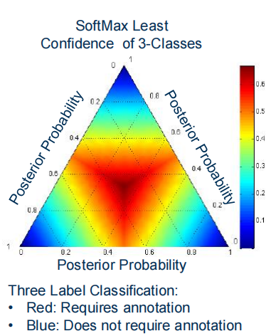
6.2.3 Margin Sampling
Margin sampling refines this idea further by considering the difference between the two most probable classes. Instead of looking only at the highest probability, margin sampling measures how close the top two predictions are. A small difference indicates that the model is nearly undecided between two classes.
The margin-based acquisition function is defined as:
\[a(x_1, ..., x_{N_b} | f_W(x)) = \sum_{i=1}^{N_b} \big(p(y=c_h|x_i,W) - p(y=c_s|x_i,W)\big)\]
where \(c_h\) denotes the class with the highest predicted probability and \(c_s\) denotes the class with the second highest predicted probability.
A smaller margin indicates higher uncertainty because the model is nearly indifferent between two competing classes. Therefore, samples with the smallest margins are typically selected for labeling. This strategy is particularly useful for refining decision boundaries because it focuses on samples near class boundaries .
Figure 6 illustrates this idea visually.
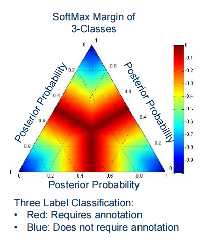
6.3 Summary of Strategies
Although entropy sampling, least confidence sampling, and margin sampling all aim to identify uncertain samples, they differ in how much information from the prediction distribution they use. Entropy sampling considers the full class distribution, least confidence considers only the highest probability, and margin sampling considers the difference between the top two probabilities.
The table below summarizes the key differences between these strategies.
| Strategy | Key Idea |
|---|---|
| Entropy | Select samples with highest overall uncertainty |
| Least Confidence | Select samples with lowest maximum prediction confidence |
| Margin | Select samples with smallest difference between top predictions |
In practice, the choice between these methods depends on the dataset and model behavior. Entropy sampling often performs well when full probability distributions are informative, least confidence is computationally simple and efficient, and margin sampling is particularly effective when decision boundary refinement is important.
6.4 Relation to Uncertainty, Anomaly Detection, and OOD Detection
Active learning relies heavily on uncertainty estimates to select informative samples for labeling. However, it is important to distinguish this notion of uncertainty from related concepts such as anomaly detection and out-of-distribution (OOD) detection.
In active learning:
Uncertainty is used as a query strategy to improve model performance by selecting samples near the decision boundary.
In contrast:
Anomaly detection aims to identify rare or abnormal samples relative to a notion of normality.
OOD detection focuses on identifying samples that do not belong to the training distribution.
A key distinction is that uncertain samples in active learning are often informative but valid examples (e.g., near class boundaries), whereas anomalies or OOD samples may be irrelevant or even harmful to label and include in the training process. In particular, samples that are out-of-distribution may also exhibit high uncertainty, but querying such samples may not improve the model since they do not reflect the target data distribution.
Therefore, while these concepts are related through the notion of uncertainty, their objectives and roles in the learning pipeline are fundamentally different.
7. Diversity-based Active Learning
While difficulty-based active learning focuses on selecting the most uncertain samples, diversity-based active learning focuses on selecting samples that best represent the overall structure of the dataset. The main goal is to avoid redundancy by ensuring that the selected samples cover different regions of the feature space. This helps the model learn the global structure of the data rather than focusing only on difficult edge cases.
7.1 Definition
Diversity-based sampling aims to select samples that collectively provide good coverage of the dataset. Instead of selecting samples purely based on uncertainty, these methods prioritize representativeness. This is typically achieved through acquisition functions that operate on feature representations learned by the model.
Two common ideas frequently appear in diversity-based methods. One approach involves selecting samples near class centroids, which act as representative centers of clusters in the feature space. Another approach involves constructing a coreset, which is a carefully selected subset of the dataset that preserves the geometric or statistical structure of the full dataset. Both approaches attempt to ensure that the labeled dataset reflects the diversity of the full data distribution.
7.2 Popular Methods
Several diversity-based acquisition strategies have been proposed. Two commonly used approaches are Core Set sampling and discriminative active learning .
7.2.1 Core Set Sampling
The goal of Core Set sampling is to select samples that best cover the global structure of the data distribution. Instead of focusing on uncertainty, this approach focuses on selecting samples that are maximally representative of the dataset. Intuitively, this can be viewed as selecting points that minimize the distance between the labeled subset and the remaining unlabeled data.
One formulation of the acquisition function is:
\[a(x_1, \dots, x_{N_b} | f_W(x)) = \frac{1}{n} l_{\text{pool}} - \frac{1}{N_b} \sum_{i=1}^{N_b} l(x_i, y_i; f_W)\]
where \(l_{\text{pool}}\) represents the cumulative loss over the unlabeled data pool, while \(l(x_i, y_i; f_W)\) represents the loss of an individual selected sample. The normalization terms ensure that both the global loss and selected sample losses are properly scaled.
Intuitively, this formulation encourages the selection of samples that reduce the overall expected loss across the dataset. By selecting representative samples, the model can approximate the performance it would achieve if all data were labeled.
Core Set methods are particularly useful for complex datasets because they encourage uniform coverage of the data space. However, they can become computationally expensive for very large datasets because computing distances or losses across the full dataset may be costly. Additionally, they may be sensitive to noisy samples that distort the feature space.
7.2.1.1 Greedy k-Centers Algorithm
In practice, Core Set selection is often implemented using a greedy k-centers algorithm. This algorithm iteratively selects samples that maximize coverage of the feature space.
The process typically begins with a small labeled subset. At each iteration, the algorithm evaluates all unlabeled samples and computes a utility score based on their distance from the currently selected samples. The sample that provides the greatest improvement in coverage is then added to the labeled set. This process continues until the desired number of samples has been selected.
This greedy procedure provides an efficient approximation to the optimal coverage problem and is widely used in practice because of its simplicity and effectiveness .

Figure 7 illustrates this idea. The red points represent unlabeled samples in the dataset, while the blue points represent the selected samples that serve as representatives of the overall distribution. The circles surrounding the selected points indicate their coverage regions, demonstrating how the selected samples collectively span the dataset.
7.2.2 Discriminative Active Learning
Discriminative active learning takes a different approach by explicitly learning which samples are underrepresented. Instead of measuring distances directly, this method trains a classifier to distinguish between labeled and unlabeled samples. The intuition is that samples that are easy to distinguish as unlabeled are likely to represent regions of the feature space that are not yet well covered by the labeled data .
The method typically proceeds in two stages. First, a binary classifier \(\phi(x)\) is trained to distinguish between labeled and unlabeled samples. Next, this classifier is applied to the unlabeled data pool to identify samples that are most likely to belong to the unlabeled class. These samples are then prioritized for annotation.
The acquisition function can be written as:
\[a(x_1, \dots, x_{N_b} | f_W(x)) = - \sum_{i=1}^{N_b} p(y = u | \phi(x_i))\]
where \(p(y=u|\phi(x_i))\) represents the probability that sample \(x_i\) belongs to the unlabeled class according to the classifier.
Intuitively, samples with high probability of being unlabeled are those that differ most from the current labeled dataset. Selecting these samples helps improve coverage of underrepresented regions of the feature space.
Discriminative methods have the advantage of adapting dynamically to the model’s current knowledge. However, their performance depends heavily on the quality of the binary classifier. If the classifier is poorly trained or the dataset is highly imbalanced, the method may fail to identify truly informative samples.
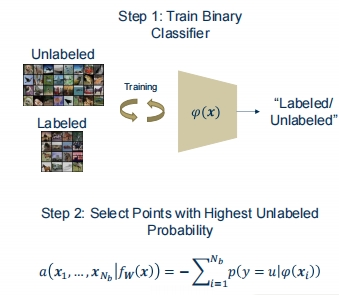
Figure 8 shows how discriminative sampling identifies samples that differ from the labeled set. These samples often lie in regions of the feature space that are not well represented by existing labeled data.
7.3 Summary
Diversity-based methods complement uncertainty-based methods by ensuring broad coverage of the data distribution. While uncertainty methods refine decision boundaries, diversity methods improve global representation. In practice, many modern active learning systems combine both approaches to balance exploration (diversity) and exploitation (uncertainty).
Core Set methods focus on geometric coverage of the dataset, while discriminative methods focus on identifying underrepresented regions through learned classifiers. Both approaches aim to maximize the usefulness of labeled samples while minimizing redundancy in the training set.
8. Fusion-Based Active Learning
Fusion-based active learning combines the strengths of both diversity-based and difficulty-based acquisition strategies. Rather than relying on a single criterion for selecting samples, fusion approaches attempt to balance representativeness and uncertainty. The motivation behind this approach is that diversity-based methods ensure broad coverage of the dataset, while difficulty-based methods refine the model’s decision boundaries. By combining both perspectives, fusion methods aim to improve both global understanding and local prediction accuracy .
8.1 Definition
The central idea behind fusion-based active learning is to select samples that are both representative of the dataset and informative for improving model performance. In practice, this means balancing two competing objectives.
The first objective is diversity, which focuses on selecting samples that represent the global structure of the dataset. This is especially important during the early stages of active learning, when the model has very limited labeled data. Ensuring good coverage of the data distribution at this stage helps the model build a stable understanding of the feature space.
The second objective is difficulty, which focuses on selecting samples that the model finds difficult to predict. These samples often lie near decision boundaries or in ambiguous regions of the feature space. Difficulty-based selection becomes increasingly important in later stages of active learning, when the model already understands the general structure of the data and must refine its predictions.
Fusion-based methods therefore attempt to dynamically balance these two objectives. Early iterations may prioritize diversity to improve dataset coverage, while later iterations may prioritize uncertainty to refine the model’s predictions.
8.2 Strengths and Limitations
Fusion-based approaches offer several advantages compared to using diversity or difficulty alone. One major strength is their ability to adapt to different stages of the active learning process. By initially emphasizing diversity and later emphasizing difficulty, these methods can improve both data coverage and decision boundary refinement. This often leads to more efficient use of annotation resources and improved overall model performance.
Another advantage is that fusion methods naturally balance global representation with local refinement. Diversity ensures that the labeled dataset reflects the overall structure of the data, while difficulty ensures that the model improves where it is weakest.
Despite these advantages, fusion-based methods also introduce additional challenges. One limitation is that they often require a weighting parameter (commonly denoted as \(\alpha\)) to balance diversity and difficulty. The choice of this parameter can significantly affect performance and may require careful tuning depending on the dataset and model.
Another limitation is computational complexity. Because fusion methods combine multiple acquisition criteria, they are typically more computationally expensive than simpler strategies such as entropy sampling or least-confidence sampling. This tradeoff between performance and computational cost must often be considered in practical deployments.
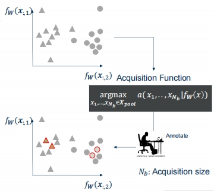
Figure 9 illustrates how fusion-based active learning integrates both diversity and difficulty considerations into the sample selection process. By combining these complementary strategies, the model can improve both its understanding of the dataset structure and its ability to resolve difficult predictions.
8.3 Summary
Fusion-based active learning can be viewed as a practical compromise between exploration and exploitation. Diversity-based methods explore the dataset to ensure good coverage, while difficulty-based methods exploit model weaknesses to improve prediction accuracy. By combining both approaches, fusion strategies often achieve better performance than either approach alone, particularly in complex real-world datasets.
9. Deployment Performance Metric: Regression
When deploying active learning systems in real-world applications, improving accuracy alone is not sufficient. It is equally important to ensure that model updates do not introduce unexpected failures. One important deployment concern is performance regression, which occurs when a model update causes previously correct predictions to become incorrect. This phenomenon is particularly important in safety-critical applications such as autonomous driving, medical diagnosis, and robotics, where even small performance degradations may introduce significant risk.
9.1 Definition
Performance regression refers to situations where model performance degrades after retraining or after incorporating new labeled samples through active learning. Although the overall accuracy may improve, individual predictions may worsen. This creates reliability concerns because model improvements should ideally not come at the expense of previously correct behavior.
9.1.0.1 Illustrative Example
Consider two consecutive rounds of active learning. In Round \(N-1\), the model may achieve an accuracy of approximately \(87\%\), correctly identifying important objects such as vehicles and pedestrians. After additional samples are selected and the model is retrained in Round \(N\), the overall accuracy may increase to approximately \(89\%\). Despite this improvement, some samples that were previously classified correctly may now be misclassified. This illustrates how performance regression can occur even when aggregate metrics improve.
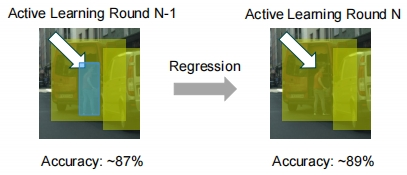
Figure 10 highlights how model updates can simultaneously improve some predictions while degrading others. This motivates the need for more detailed deployment metrics beyond simple accuracy.
9.2 Impact of Performance Regression
Performance regression has important implications for how active learning systems are deployed and monitored. One important consideration is the definition of stopping criteria. Without proper stopping rules, additional active learning rounds may lead to diminishing returns or even degradation due to overfitting or unstable updates.
Performance regression also affects deployment decisions. When models are updated continuously in online learning settings, regression risks must be carefully evaluated before deployment. Even small regressions may be unacceptable in high-risk environments.
Finally, the quality of the active learning protocol itself plays a major role. Carefully designed annotation strategies, validation procedures, and retraining protocols can help minimize regression while maintaining efficient annotation usage.
9.3 Negative Flips
A useful way to study performance regression is through the concept of negative flips. A negative flip occurs when a sample that was previously classified correctly becomes misclassified after a model update. This reflects either catastrophic forgetting or instability introduced by new training data.
Figure 11 illustrates this phenomenon.

In this figure, samples are grouped based on how their predictions change between two learning rounds. Samples shown in gray are classified correctly in both rounds, while red samples are incorrect in both rounds. Orange points represent positive flips, which are samples corrected by the new model. Blue points represent negative flips, which are samples that became incorrect after retraining and therefore indicate regression.
This behavior often occurs for samples located near the decision boundary. As the model updates, the decision boundary shifts, which may improve some predictions while degrading others.
9.4 Negative Flip Rate
To quantify performance regression, we define the Negative Flip Rate (NFR) . This metric measures the proportion of samples that were previously classified correctly but become misclassified after the model update.
The NFR is defined as:
\[m = \frac{1}{N} \sum_{i=1}^{N} \mathbf{1} \big[ y_i^{\text{old}} = y_i, \; y_i^{\text{new}} \neq y_i \big]\]
where \(y_i^{\text{old}}\) denotes the prediction from the previous model, \(y_i^{\text{new}}\) denotes the prediction from the updated model, and \(y_i\) denotes the true label. The indicator function returns 1 when a negative flip occurs and 0 otherwise.
Intuitively, this metric measures how often the new model "forgets" previously correct predictions. A lower NFR indicates more stable model updates.
9.5 Workflow of NFR Calculation
The Negative Flip Rate can be computed through a simple comparison workflow. First, samples are passed through both the previous model and the updated model. The predictions from both models are then compared against the ground truth labels. Samples that were previously correct but become incorrect are counted as negative flips. The NFR is then computed as the proportion of such samples among the total dataset.
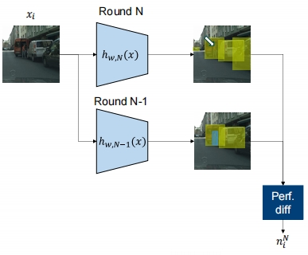
Figure 12 illustrates this comparison process. By explicitly tracking prediction changes between training rounds, practitioners can better understand the stability of their model updates.
9.6 Performance Regression: CIFAR-10 vs CIFAR-100
The behavior of performance regression can differ significantly depending on dataset complexity. This can be observed when comparing CIFAR-10 and CIFAR-100.
For CIFAR-10, the Negative Flip Rate typically shows some initial fluctuations but stabilizes once a sufficient number of labeled samples is collected (around 10,000 samples). Furthermore, different sampling strategies such as entropy sampling, least confidence sampling, and margin sampling tend to converge to similar NFR values. This suggests that regression risk is relatively low for simpler datasets.
In contrast, CIFAR-100 exhibits higher NFR values, particularly in early learning stages with limited labeled data (fewer than 2,500 samples). In this setting, sampling strategies play a more important role. For example, margin sampling often produces slightly lower NFR values, suggesting improved stability for more complex classification tasks.
9.6.0.1 Expected Trends
Two important trends typically emerge when studying performance regression. First, model accuracy generally improves as more labeled data becomes available. Second, the Negative Flip Rate often increases during early learning stages due to unstable decision boundaries, but eventually stabilizes as the model becomes more robust.
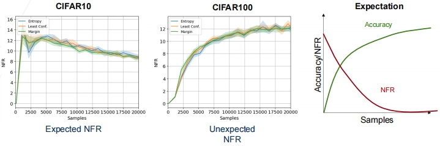
9.7 Conclusions and Implications
The Negative Flip Rate provides a more detailed view of model performance than accuracy alone, particularly for complex datasets such as CIFAR-100. While sampling strategies may have limited effect on simpler datasets, they can significantly influence regression behavior in more challenging settings.
Monitoring the tradeoff between accuracy and NFR is therefore an important practical consideration. In many real-world systems, slightly lower accuracy may be preferable if it results in greater prediction stability. Careful monitoring of regression metrics can therefore guide better sample selection strategies and more reliable deployment decisions.
11. References
[]
Burr Settles. Active Learning Literature Survey. University of Wisconsin–Madison, 2009.
Lewis, D. and Gale, W. A Sequential Algorithm for Training Text Classifiers. SIGIR, 1994.
Sener, O. and Savarese, S. Active Learning for Convolutional Neural Networks: A Core-Set Approach. ICLR, 2018.
Gissin, D. and Shalev-Shwartz, S. Discriminative Active Learning. arXiv, 2019.
Ashok, P. et al. On Negative Flip Rate. CVPR, 2021.
Powers, D. Evaluation: Precision, Recall and F-measure. Journal of Machine Learning Technologies, 2011.
Everingham, M. et al. The Pascal Visual Object Classes Challenge. IJCV, 2010.
Ash, J. et al. Deep Batch Active Learning by Diverse Gradient Embeddings. ICLR, 2020.
Burr Settles. Active Learning Literature Survey. University of Wisconsin–Madison, 2009.
Steve Hanneke. Theory of Disagreement-Based Active Learning. Foundations and Trends in Machine Learning, 2014.
Yoav Freund, H. Sebastian Seung, Eli Shamir, and Naftali Tishby. Selective Sampling Using the Query by Committee Algorithm. Machine Learning, 1997.